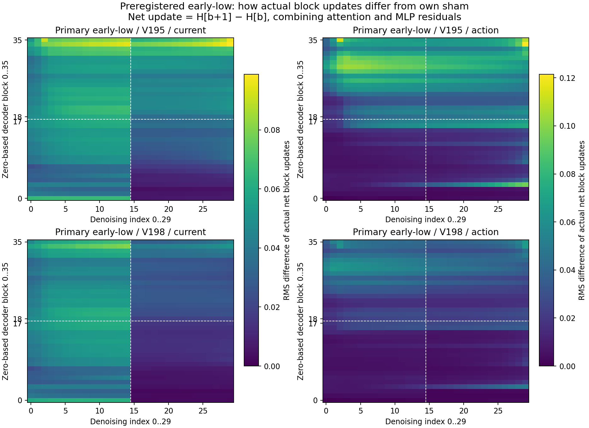
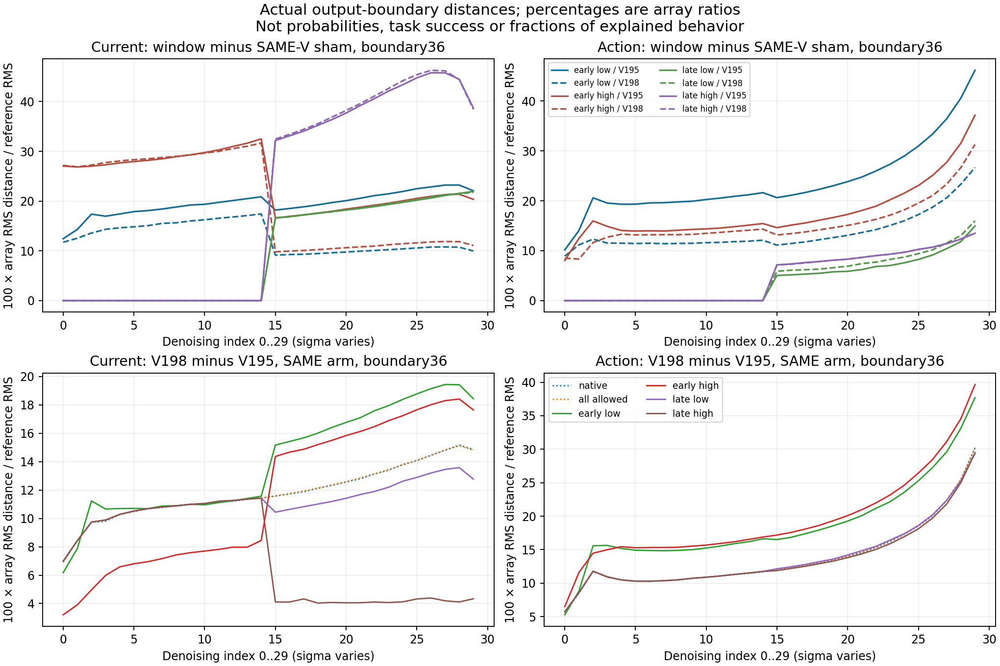
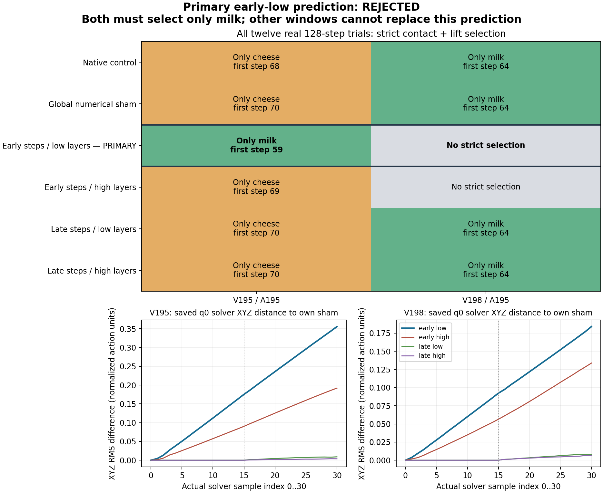

2026-10-04 · 最新：12组分层、分时刻的网络干预 · 代码、真实数组与录像
切同一条连接，前半段会改变抓取。
一直只查这个问题：指令是“抓牛奶，放进篮子”。牛奶移远后却抓奶酪盒。我们要找到导致转抓的具体内部计算，并验证改它能否恢复跟着牛奶抓。
这次没有只看哪层比较亮。我们真的切断一条网络连接，分成四个范围测试：前／后15次去噪，以及较低／较高18层。12组全部执行完，并保存真实内部数组和MuJoCo录像。
1. 我们到底改了什么？
当前照片先变成一组向量；网络还在计算另一组预测未来的向量。原模型允许当前视觉向量读取未来向量。这次只禁止这种读取，动作向量直接读取未来的连接仍保留。
文字、照片、机器人初态、动作随机起点都相同。A／B只有未来生成的初始随机数组不同：A原本抓奶酪盒，B原本抓牛奶。它们不是两张不同的照片，也不是两条不同的指令。
为什么有两种“时间”？网络先用30次去噪生成首轮16步动作，我们只在这里改内部连接。机械臂执行完16步后，重新拍照；后续7轮都恢复原生推理。总共每条实际执行128步。
2. 猜想为什么没有成立？
我们事先要求A和B都严格且只抓起牛奶，才算主要预测成立。A的确从奶酪改抓牛奶；但B未达到严格抓起条件，所以结果是否定，不能把A单独挑出来算成功。
目前能说清楚的是：在这份初态和这两份未来起点下，抓取对前半段这条连接的改动比较敏感。较低层的干预能救回A，却损害B；较高层的干预损害B，却没救回A。后半段同样规模的改动没有改变抓取对象。这比“第几层向量变化了百分之几”更进一步：我们已经把网络改动和实际抓取对应起来了。
但这还不是“低层负责牛奶，高层负责运动”。切连接会让剩下的attention权重重新分配，且18层仍然很大；内部向量同时混合了画面、位置和动作相关内容。
还有一个待排除的解释：前后去噪的噪声强度不同，前面的改动也有更多后续计算可以累计。所以“前半段更敏感”可能来自采样过程，还不能直接等同于“这里在决定抓谁”。
展开全部12条结果与严格抓起判据
| 首轮怎么改 | 未来起点 | 严格抓起的物体 | 首个连续五步窗口 |
|---|---|---|---|
| 原生计算 | A | 奶酪盒 | 第68～72步 |
| 原生计算 | B | 牛奶 | 第64～68步 |
| 连接全保留的接口对照 | A | 奶酪盒 | 第70～74步 |
| 连接全保留的接口对照 | B | 牛奶 | 第64～68步 |
| 前半段 × 第1～18层 | A | 牛奶 | 第59～63步 |
| 前半段 × 第1～18层 | B | 未达到严格抓起条件 | 无 |
| 前半段 × 第19～36层 | A | 奶酪盒 | 第69～73步 |
| 前半段 × 第19～36层 | B | 未达到严格抓起条件 | 无 |
| 后半段 × 第1～18层 | A | 奶酪盒 | 第70～74步 |
| 后半段 × 第1～18层 | B | 牛奶 | 第64～68步 |
| 后半段 × 第19～36层 | A | 奶酪盒 | 第70～74步 |
| 后半段 × 第19～36层 | B | 牛奶 | 第64～68步 |
每份记录都要同时满足：左右指垫接触物体、相对初态抬高严格超过2厘米，连续5份记录。所有物体的129份记录都检查了。未达到条件不等于机械臂没动；抓起也不等于最终放进篮子。
原生与“同样经过mask接口但连接全保留”的对照都保留A奶酪、B牛奶。不过接口对照不是数值完全不变，因此每个窗口都与自己同起点的接口对照比较。
3. 一次只看一条实际录像
先看主要检验的A，再切到B。都是MuJoCo实际执行；没有用模型生成的视频替代执行结果。
当前：前半段 × 第1～18层，起点A：牛奶；第59～63步。这是实际执行，抓起不等于最终放篮成功。
4. 内部数字是怎么变的？
下面看主要检验：切前半段、低18层。左边是当前视觉向量，右边是动作向量；上面A，下面B。越亮，说明这一层造成的净更新，与保留连接时的净更新差得越多。

白线标出干预的层数和时刻边界。直接干预结束之后，差异仍可能传下去：前面已改变的向量成了后面计算的输入。后续去噪也使用已经改变的动作／视频状态。所以后面还有差异，不能单凭这一点说网络在“记忆”或“自己锁死”。
更多内部曲线、真实数组与核验


首轮12组共360次网络计算，后续84轮共2520次，合计2880次；每条128步。四条原生／接口对照完整复现旧记录。独立检查全部1536条动作转换、96份完整模型记录、77组后续噪声配对、12条真实接触与抬高判据；作图另读全部360份逐层文件，新增模型计算0次。
统计、实际数组和图 · 全部12条执行、动作和96份模型记录 · 预登记范围、首轮真实数组及来源
公开每组第1次去噪的完整逐层文件，共12份；其余348份保存在A6000，全部360份都有SHA。统计覆盖所有层与时刻。当前／动作逐层状态已保存；没有声称记录全部未来token、QKV或所有单元。
5. 能像脑科学一样，找到语言区和运动区吗？
有功能分工的证据，但不能先贴名字。2025年的VLA研究挑出一小组内部单元，增强后可改变部分运动幅度或高度，并设置随机单元对照。研究也看到，语义与动作相关单元混在许多层里，并非前面全是语言、后面全是运动。论文原文
Cosmos3代码确实给文字和生成内容配了不同参数；视频和动作又共用生成通路。架构上分开，不等于已经知道里面各单元的功能。我们现在做的是借鉴“局部抑制，看哪种能力受损”：再把有效范围细分到更少层、某个head或一组MLP单元，检查它改变的是选谁、朝哪走，还是夹爪／运动幅度。
2026年VLA机制研究比较已有视觉语言通路与动作expert的功能差异；2024年模型与脑活动研究发现不同attention head与部分语言皮层的活动有不同预测关联。这些研究不等于当前Cosmos3已经定位了某个脑区。
下一步只查一件事
前半段低18层里，能否找到更小的一段：让A改抓牛奶，又保住B？这次的整个18层窗口做不到。继续缩小并做相同规模的无关连接对照，才能区分具体通路作用与普遍扰动。之后还必须回到15厘米错误场景和新的牛奶位置验证；当前目标尚未完成。
此前证据，需要时再看
牛奶原位／6／9厘米各三次抓牛奶；12厘米有两种结果；15厘米三次抓奶酪。此前交叉未来与动作的起始随机数组，四次抓谁跟着未来一路改变。再切未来→当前或未来→动作，确认影响可经另一组数组跨层绕行。这才进入本次分时刻、分层的干预。
旧代码、图和完整视频继续保存在实验记录，首页只展示最新一批。